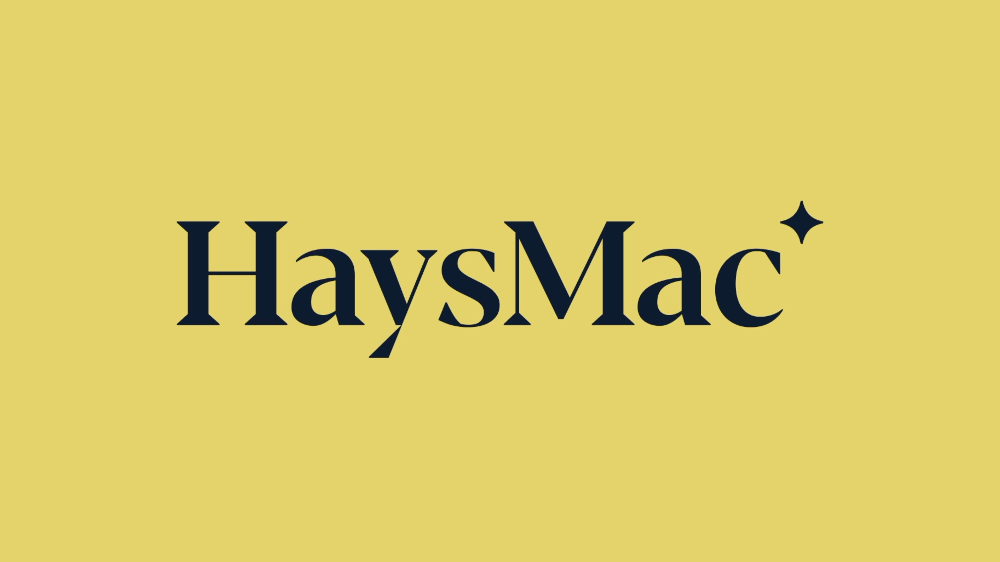
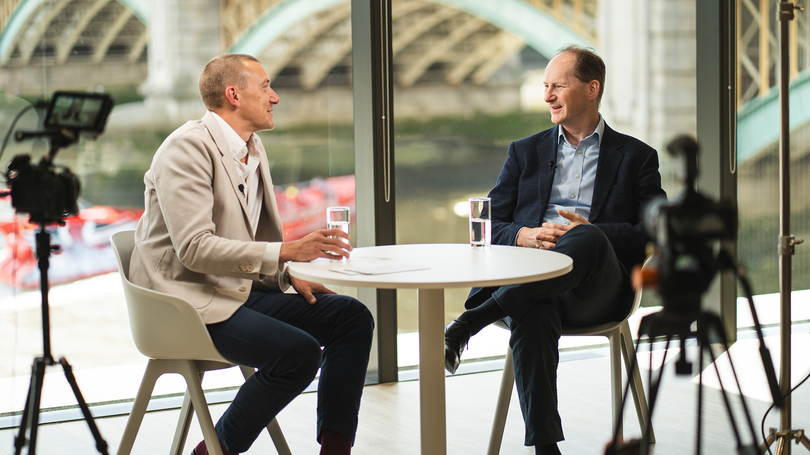
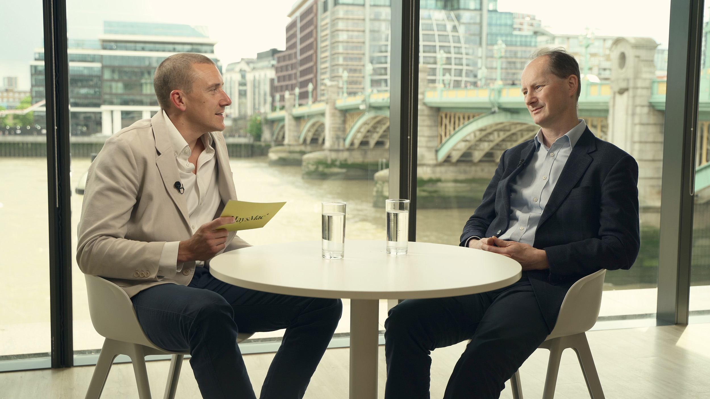
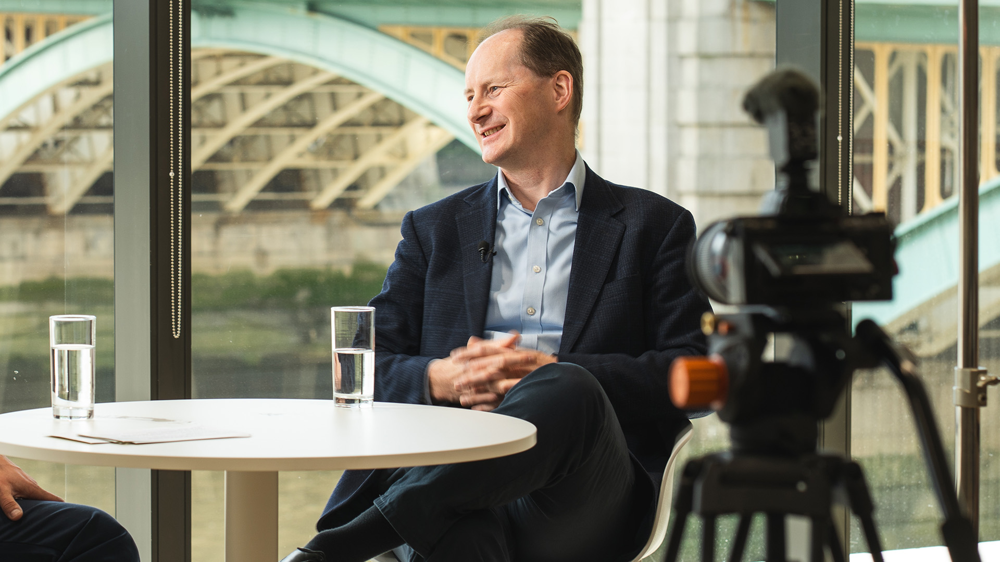

Turning one conversation into a series of LinkedIn videos for HaysMac.

One conversation, filmed once, shaped into a series of short LinkedIn edits.
HaysMac wanted to create a conversation-led video in their new office space, with the aim of producing a longer piece of content alongside shorter edits for LinkedIn.
The conversation featured Jon Dawson, HaysMac Partner, speaking with Richard Langrish, CFO at The Independent. They discussed Richard's role as CFO, where the business is investing for the future, and how AI is creating both opportunities and risks in media.
The goal was to make the conversation feel professional and considered, while still keeping it natural and easy to watch. Each shorter clip needed to work as a standalone post, with a clear topic, a strong opening and a reason for viewers to keep watching.

"We reached out to Vik for a client interview project, and he exceeded all expectations. The footage aligned perfectly with our vision and reflected our brand's tone and identity. His turnaround time was incredibly fast, and the final deliverables looked great. I wouldn't hesitate to recommend Vik for future projects."

The shoot took place in HaysMac's new office space overlooking the Thames, giving the video a strong sense of place and making the setting feel specific to them.
The main challenge was balancing the bright window light behind the speakers with the indoor lighting on their faces. The setup needed to keep the view visible without leaving the subjects underexposed.
I used a lean interview setup with additional lighting and clean audio capture, keeping the shoot professional while still allowing the conversation to feel natural.
Rather than creating one video and moving on, the conversation was shaped into a small content bank. Alongside the longer conversation edit, HaysMac received five shorter LinkedIn-ready clips that could be used across the campaign over time.
For professional services firms, video content works best when it helps people hear directly from the experts inside the business.
A longer conversation gives space for proper insight, while shorter LinkedIn edits make the content easier to share, easier to watch and more useful for ongoing marketing.
It gives firms a way to create regular, people-led content without needing a completely new idea for every post.

The full conversation edit gave HaysMac a complete campaign asset, while the shorter clips made the strongest moments easier to share on LinkedIn.
I help professional services firms turn conversations, campaigns and expert insights into useful video content for LinkedIn, websites and internal comms.